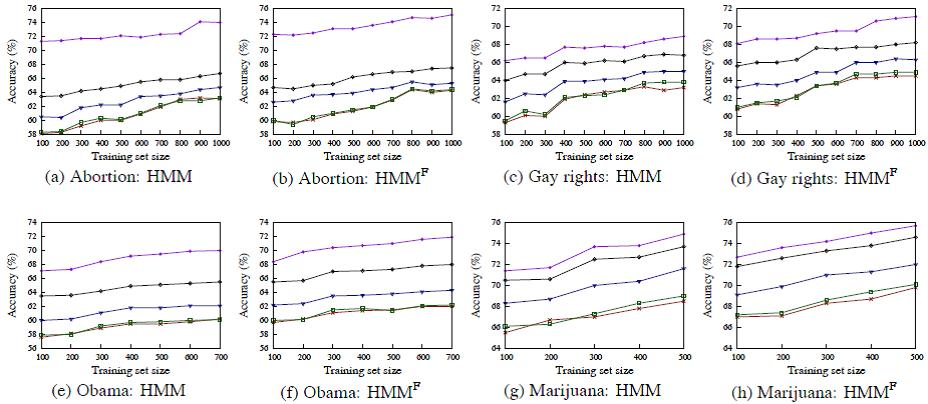

Stance Classification of Ideological Debates: Data, Models, Features, and Constraints
Kazi Saidul Hasan and Vincent Ng.
Proceedings of the 6th International Joint Conference on Natural Language Learning (IJCNLP), pp. 1348-1356, 2013.
Click here for the Postscript and PDF version.
The talk slides are available here.
Abstract
Determining the stance expressed in a post written for a two-sided debate in an online debate forum is a relatively new and challenging problem in opinion mining. We seek to gain a better understanding of how to improve machine learning approaches to stance classification of ideological debates, specifically by examining how the performance of a learning-based stance classification system varies with the amount and quality of the training data, the complexity of the underlying model, the richness of the feature set, as well as the application of extra-linguistic constraints.
Dataset
The dataset used in this paper is available from
this page.
BibTeX entry
@InProceedings{Hasan+Ng:13c,
author = {Hasa, Kazi Saidul and Vincent Ng},
title = {Stance Classification of Ideological Debates: Data, Models, Features, and Constraints},
booktitle = {Proceedings of the 6th International Joint Conference on Natural Language Processing},
pages = {1348--1356},
year = 2013
}
